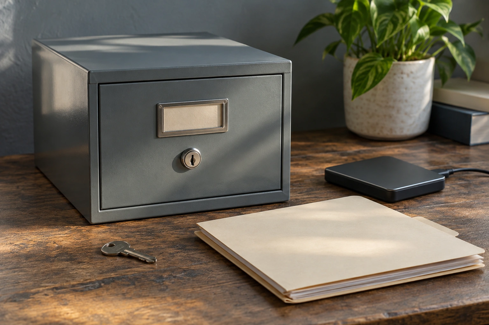

assets/photos/monthly-bookkeeping-review-html.webp 1536 x 1024assets/photos/monthly-financial-reports-html.webp 1448 x 1086assets/photos/past-due-bookkeeping-html.webp 1448 x 1086assets/photos/profit-vs-cash-flow-business-money-html.webp 1536 x 1024assets/photos/should-every-business-credit-card-be-reconciled-html.webp 1536 x 1024assets/photos/should-i-catch-up-bookkeeping-before-applying-for-financing-html.webp 1448 x 1086assets/photos/should-i-review-overdue-receivables-every-month-html.webp 1448 x 1086assets/photos/should-i-review-unpaid-bills-before-closing-the-month-html.webp 1448 x 1086assets/photos/should-loans-be-recorded-before-preparing-taxes-html-scene-v2.webp 1536 x 1024assets/photos/should-payroll-records-be-reviewed-at-year-end-html-scene-v2.webp 1536 x 1024assets/photos/should-sales-tax-collected-be-treated-as-revenue-html-scene-v2.webp 1536 x 1024assets/photos/tax-ready-bookkeeping-html.webp 1448 x 1086assets/photos/tax-ready-bookkeeping-records-html.webp 1120 x 1400assets/photos/transaction-categorization-html.webp 1448 x 1086assets/photos/what-business-expenses-should-i-be-tracking-html.webp 1448 x 1086assets/photos/what-do-monthly-financial-reports-actually-show-me-html.webp 1448 x 1086assets/photos/what-does-a-bookkeeper-actually-do-for-a-small-business-html-scene-v2.webp 1536 x 1024assets/photos/what-does-a-cleared-transaction-mean-html-scene-v2.webp 1536 x 1024assets/photos/what-happens-after-the-month-is-fully-reviewed-html.webp 1448 x 1086assets/photos/what-happens-during-monthly-bookkeeping-html.webp 1448 x 1086assets/photos/what-happens-if-a-customer-overpays-an-invoice-html-scene-v2.webp 1536 x 1024assets/photos/what-happens-if-a-transaction-is-dated-in-the-wrong-year-html-scene-v2.webp 1536 x 1024assets/photos/what-happens-if-transactions-are-uncategorized-at-tax-time-html.webp 1536 x 1024

assets/photos/what-happens-when-an-old-bank-account-is-closed-html-scene-v2.webp 1536 x 1024assets/photos/what-if-a-monthly-report-includes-an-unexpected-large-expense-html.webp 1448 x 1086assets/photos/what-if-a-payment-was-posted-to-the-wrong-account-html-scene-v2.webp 1536 x 1024assets/photos/what-if-a-transaction-fits-two-expense-categories-html-scene-v2.webp 1536 x 1024assets/photos/what-if-i-change-bookkeeping-software-midyear-html.webp 1448 x 1086assets/photos/what-if-i-pay-a-vendor-bill-twice-html-scene-v2.webp 1536 x 1024assets/photos/what-if-my-books-show-negative-cash-at-tax-time-html.webp 1448 x 1086assets/photos/what-if-old-bookkeeping-software-no-longer-has-my-data-html.webp 1536 x 1024assets/photos/what-is-a-balance-sheet-supposed-to-tell-me-html.webp 1448 x 1086assets/photos/what-is-the-difference-between-accounts-payable-and-receivable-html-scene-v2.webp 1536 x 1024assets/photos/what-is-the-difference-between-bookkeeping-and-accounting-html-scene-v2.webp 1536 x 1024assets/photos/what-is-the-difference-between-revenue-and-cash-flow-html.webp 1448 x 1086assets/photos/what-questions-should-i-ask-during-a-bookkeeping-consultation-html-scene-v2.webp 1536 x 1024